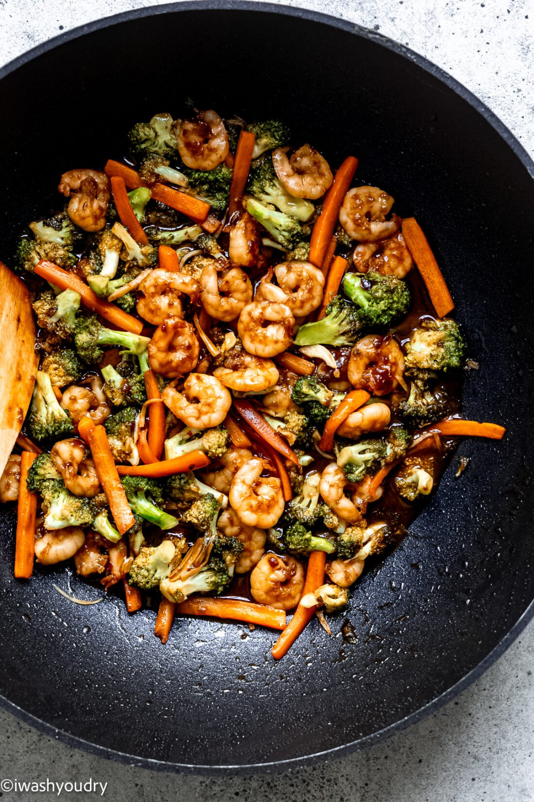

Vegetable Shrimp Stir-Fry
Serves: 2 • Prep time: 15 mins • Wrap time: 5 mins

Ingredients
- ½ lb of peeled shrimp
- 1 cup of broccoli
- ½ cup of pieces of carrots
- 1 tbsp of low-sodium soy sauce (or coconut aminos if you want)
- Garlic powder
Directions
- Add oil to a pan (or heat the nonstick pan) to medium heat.
- Add the shrimps and a splash of water to the pan. (This prevents the shrimps from burning while cooking them.)
- Cook the shrimps 2–3 minutes on each side until they are firm and pink.
- Add the vegetables and another splash of water (This prevents everything from burning while cooking.)
- Add soy sauce and garlic powder to your likely.
- Cook the vegetables until they are tender.
- Serve and enjoy!